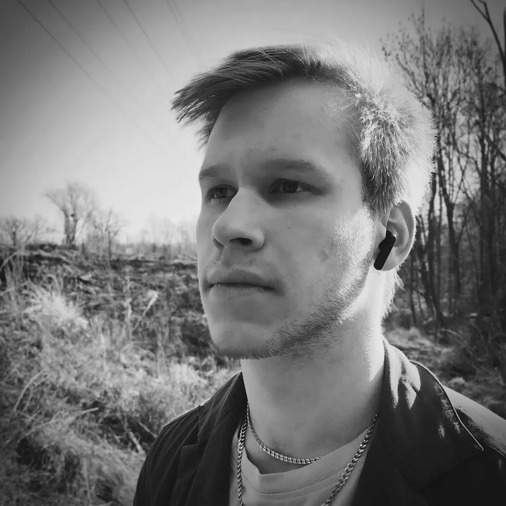

Who am I?
I am a Computer Science student at VŠB – Technical University of Ostrava. I am a student who wants to work on interesting projects with friendly and inspiring humans. I like trying new things and being creative (not only in IT). I love peace and also some risk at the same time. And I am driven by interest, not by templates.
